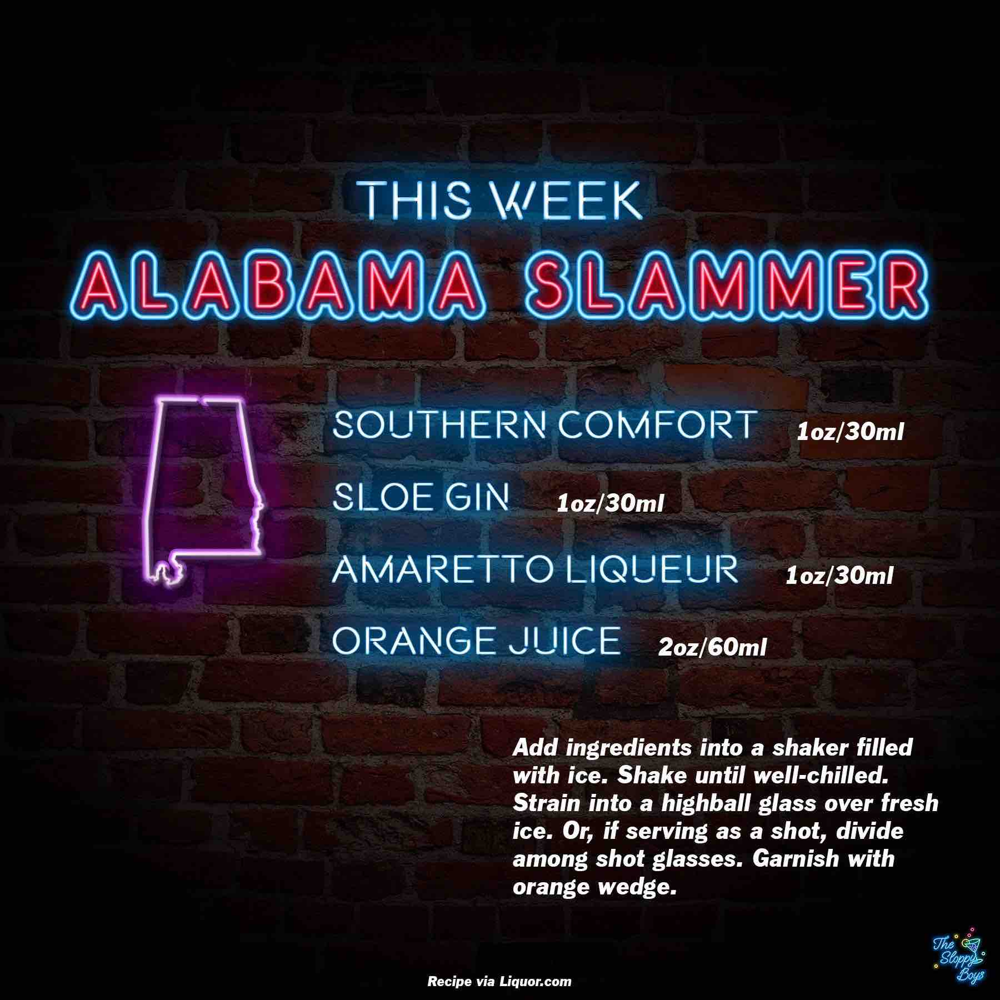

Alabama Slammer
Ingredients
- Southern Comfort (1oz/30ml)
- Sloe Gin (1oz/30ml)
- Amaretto Liqueur (1oz/30ml)
- Orange Juice (2oz/60ml)
Steps
- Add ingredients into a shaker filled with ice.
- Shake until well-chilled.
- Strain into a highball glass over fresh ice. Or, if serving as a shot, divide among shot glasses.
- Garnish with orange wedge.
Notes